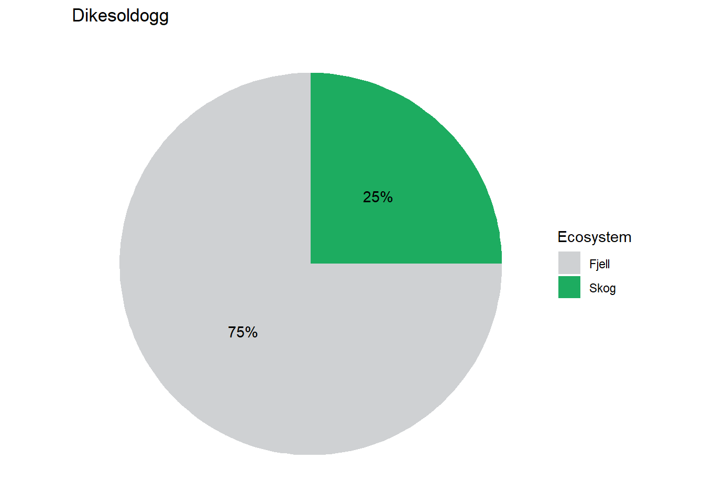
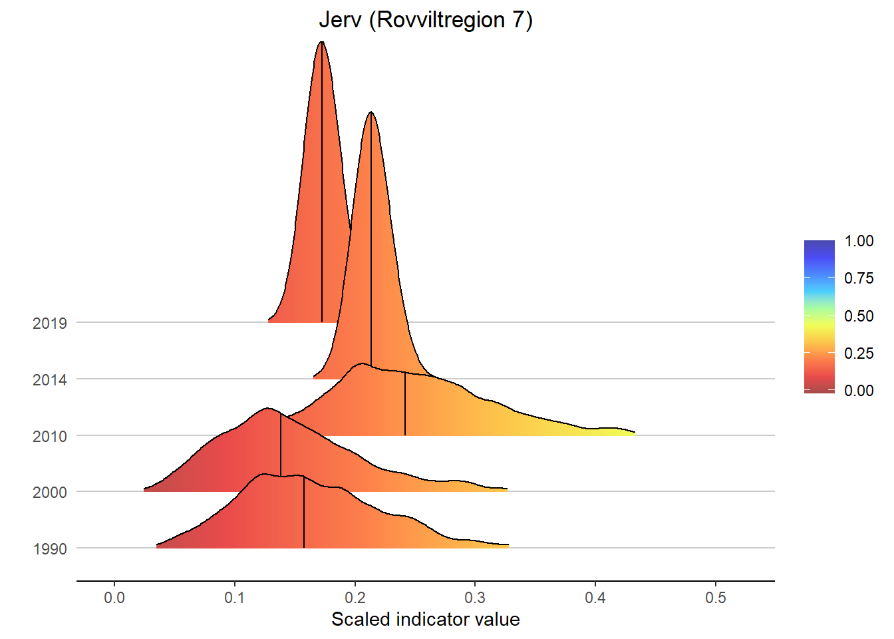
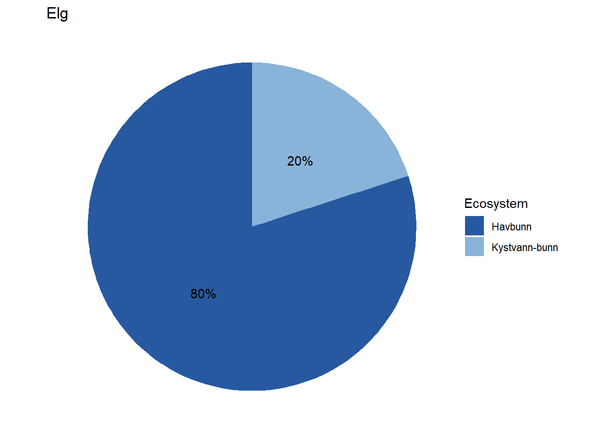
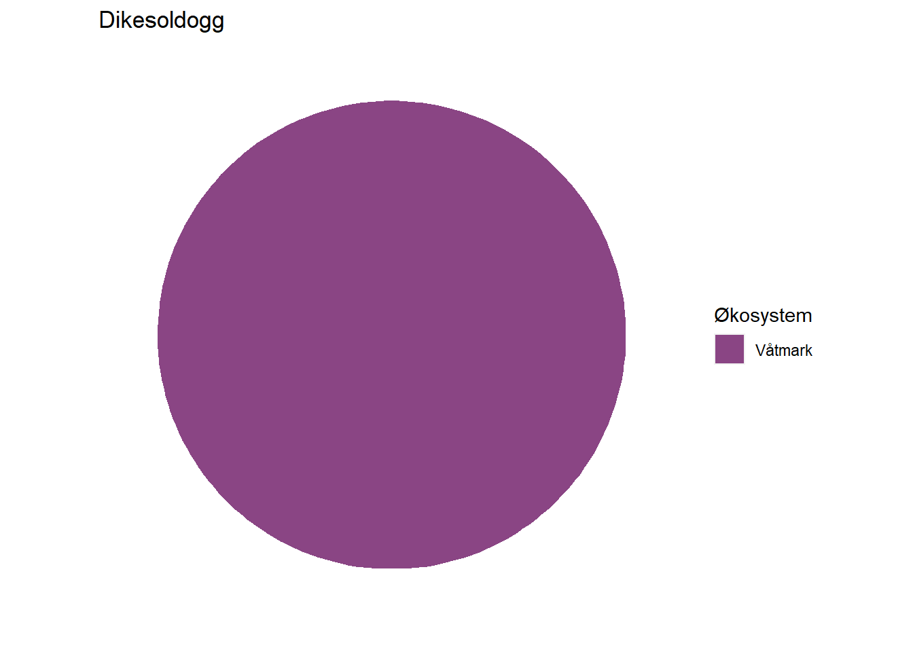
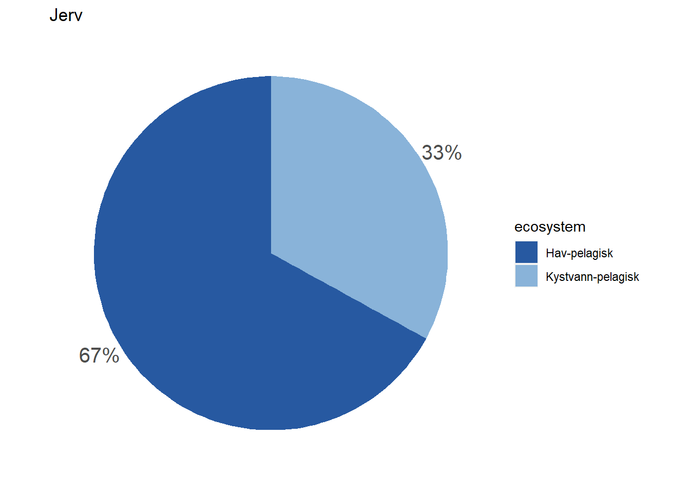
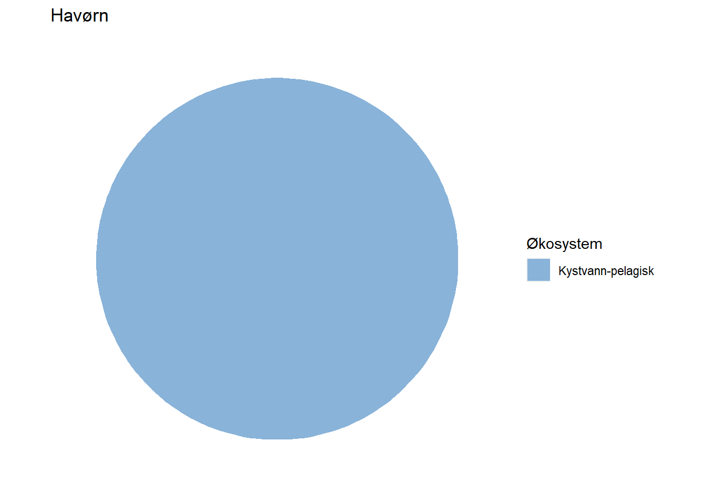

5 Other figures
5.1 Ecosystem fidelity
All indicators are assigned to at least one ecosystem, but a fair number of them are assigned to multiple ecosystems by means of proportions. Wolverine (Jerv), for example, is assigned with 25% to forest and and 75% to mountain. This basic information could easily be displayed on each indicator’s page on naturindeks.no.
The relevant information is found in the assembled indicator data under $indicators:
i <- "jerv"
indexData <- readRDS(paste0("data/", i, "_assemebled.rds"))
str(indexData$indicators)
#> 'data.frame': 1 obs. of 9 variables:
#> $ id : num 88
#> $ name : chr "Jerv"
#> $ keyElement : logi FALSE
#> $ functionalGroup : chr "Topp-predator generalist"
#> $ functionalGroupId: num 8
#> $ scalingModel : chr "Low"
#> $ scalingModelId : num 1
#> $ Fjell : num 75
#> $ Skog : num 25Any ecosystem type relevant to a specific indicator appears as a separate column in this dataframe, and contains a value representing the % fidelity to that ecosystem type.
Using separately stored information on available ecosystem types, we can assemble this data for all of our example indicators:
# Load ecosystem info
EcoSysInfo <- readRDS("data/EcosystemInfo.rds")
# Indicator list
indicator <- c("Dikesoldogg",
"Jerv",
"Elg",
"Lomvi",
"Havørn",
"Lange")
# Assemble fidelity data
fidData <- data.frame()
for(i in 1:length(indicator)){
indexData <- readRDS(paste0("data/", indicator[i], "_assemebled.rds"))
ColIdx <- which(names(indexData$indicators) %in% EcoSysInfo$ecosystem)
fidDataI <- data.frame(
indicator = indicator[i],
ecosystem = names(indexData$indicators)[ColIdx],
fidelity = unname(as.numeric(indexData$indicators[,ColIdx])))
fidData <- rbind(fidData, fidDataI)
}This gives us a dataframe with all indicators and their fidelity to different ecosystems:
print(fidData)
#> indicator ecosystem fidelity
#> 1 Dikesoldogg Våtmark 100
#> 2 Jerv Fjell 75
#> 3 Jerv Skog 25
#> 4 Elg Skog 100
#> 5 Lomvi Hav-pelagisk 67
#> 6 Lomvi Kystvann-pelagisk 33
#> 7 Havørn Kystvann-pelagisk 100
#> 8 Lange Havbunn 80
#> 9 Lange Kystvann-bunn 20Before plotting, we match the integer ecosystem IDs to make sure the colour mapping works correctly:
fidData <- merge(fidData, EcoSysInfo, all.x = TRUE)Next, we’ll visualize this information for each indicator by means of pie charts.
suppressWarnings(library(ggplot2))
suppressWarnings(library(tidyverse))
EcoSys_cols <- NIviz_colours$EcoSys_cols[1:11]
names(EcoSys_cols) <- EcoSysInfo$ecosystem
for(i in 1:length(indicator)){
sub_fidData <- subset(fidData, indicator == indicator[i])
print(
ggplot(sub_fidData, aes(x = "", y = fidelity, fill = fct_inorder(ecosystem))) +
ggtitle(indicator[i]) +
geom_bar(stat = "identity") +
geom_text(aes(label = paste0(fidelity, "%")),
position = position_stack(vjust = 0.5)) +
coord_polar(theta = "y") +
scale_fill_manual(name = "Ecosystem", values = EcoSys_cols[which(names(EcoSys_cols) %in% sub_fidData$ecosystem)]) +
theme_void()
)
} Depending on how large these pie charts should appear on the website in the end, it may be necessary to move the percentage labels outside the pies. Doing that is a bit more cumbersome, but works with the code below unless the indicator belongs 100 % to one dataset. When that is the case, the solution below does not print the percentage label at all (see indicator Lange) and I have not figured out how to fix that yet.
Depending on how large these pie charts should appear on the website in the end, it may be necessary to move the percentage labels outside the pies. Doing that is a bit more cumbersome, but works with the code below unless the indicator belongs 100 % to one dataset. When that is the case, the solution below does not print the percentage label at all (see indicator Lange) and I have not figured out how to fix that yet.
for(i in 1:length(indicator)){
sub_fidData <- subset(fidData, indicator == indicator[i])
posData <- sub_fidData %>%
mutate(csum = rev(cumsum(rev(fidelity))),
pos = fidelity/2 + lead(csum, 1),
pos = if_else(is.na(pos), fidelity/2, pos))
print(
ggplot(sub_fidData, aes(x = "", y = fidelity, fill = ecosystem)) +
ggtitle(indicator[i]) +
geom_bar(stat = "identity") +
coord_polar(theta = "y") +
#scale_fill_manual(values = EcoSys_cols) +
scale_fill_manual(values = EcoSys_cols[which(names(EcoSys_cols) %in% sub_fidData$ecosystem)]) +
scale_y_continuous(breaks = posData$pos, labels = paste0(sub_fidData$fidelity, "%")) +
theme(axis.ticks = element_blank(),
axis.title = element_blank(),
axis.text = element_text(size = 15),
panel.background = element_rect(fill = "white"))
)
}
5.2 Wordcloud figures
library(wordcloud)
library(NIcalc)
library(wordcloud2)
library(RColorBrewer)
library(readxl)
library(dplyr)
library(tm)The following wordcloud figures show the pressure factors for each indicator, where both the color saturation and text size represent the importance of each pressure factor. Small text size and low saturation means low importance, while large text size represent pressure factors with high importance to the indicator.
# Load dataset
pressure = read_excel("P:/41201612_naturindeks_2021_2023_database_og_innsynslosning/Pilot_Forbedring_Innsynsløsning/R/Indikator_paavirkning.xlsx")
# Filter for species of interest
pressure = pressure %>% filter(navn_norsk == "Elg" | navn_norsk == "Dikesoldogg" | navn_norsk == "Havørn" | navn_norsk == "Lange" | navn_norsk == "Jerv" | navn_norsk == "Lomvi") # NB - Jerv was not included in the provided excel file
pressure = arrange(pressure, by = navn_norsk)
pressure = pressure %>% rename(PressureFactor = Paavirkningsfaktor, PressureValue = FK_PaavirkningsverdiID)
# Remove all instances of "Ikke rel/ukjent" category" and increase the value of pressure factors for better contrast in wordcloud figures
pressure = pressure %>% filter(PressureValue != 7) %>% mutate(PressureValue = PressureValue*2)
# Create separate datasets for the different species
dikesoldogg = pressure %>% filter(navn_norsk == "Dikesoldogg") %>% dplyr::select(PressureFactor, PressureValue)
elg = pressure %>% filter(navn_norsk == "Elg") %>% dplyr::select(PressureFactor, PressureValue)
havørn = pressure %>% filter(navn_norsk == "Havørn") %>% dplyr::select(PressureFactor, PressureValue)
lange = pressure %>% filter(navn_norsk == "Lange") %>% dplyr::select(PressureFactor, PressureValue)
lomvi = pressure %>% filter(navn_norsk == "Lomvi") %>% dplyr::select(PressureFactor, PressureValue)
# Create a custom color gradient (green in this case)
pressureColors = c("#bde4aa", "#addb9d", "#9cd28f", "#8cc982", "#7dc275", "#6cb967", "#5db15a", "#50a54e", "#479845", "#3f8c3b", "#367e31", "#2e7228", "#25661f") 5.3 The most important pressure factors for dikesoldogg (oblong-leaved sundew)
# Dikesoldogg
wordcloud(words = dikesoldogg$PressureFactor, freq = dikesoldogg$PressureValue, min.freq = 1, max.words = 200, random.order = FALSE, rot.per = 0.35, colors = pressureColors, scale = c(1.5, 0.5)) # use rot.per to set the percentage of words that are at a 90 degree angle
5.4 The most important pressure factors for elg (Moose)
wordcloud(words = elg$PressureFactor, freq = elg$PressureValue, min.freq = 1, max.words = 200, random.order = FALSE, rot.per = 0.35, colors = pressureColors, scale = c(1.5, 0.5))
5.5 The most important pressure factors for havørn (White-tailed eagle)
wordcloud(words = havørn$PressureFactor, freq = havørn$PressureValue, min.freq = 1, max.words = 200, random.order = FALSE, rot.per = 0.35, colors = pressureColors, scale = c(1.5, 0.5))
5.6 The most important pressure factors for Lange (Common ling)
wordcloud(words = lange$PressureFactor, freq = lange$PressureValue, min.freq = 1, max.words = 200, random.order = FALSE, rot.per = 0.35, colors = pressureColors, scale = c(1.5, 0.5))
5.7 The most important pressure factors for Lomvi (common guillemot)
wordcloud(words = lomvi$PressureFactor, freq = lomvi$PressureValue, min.freq = 1, max.words = 200, random.order = FALSE, rot.per = 0.35, colors = pressureColors, scale = c(1.5, 0.5))
5.8 Data type
source("R/colorPalettes.R")
#Elg datatyper
data <- data.frame(
category=c("Ekspert",
"Modeller",
"Overvåkning"),
count=c(4.9, 95.1, 0)
)
# load library
library(tidyverse)
# Compute percentages
data$fraction <- data$count / sum(data$count)
# Compute the cumulative percentages (top of each rectangle)
data$ymax <- cumsum(data$fraction)
# Compute the bottom of each rectangle
data$ymin <- c(0, head(data$ymax, n=-1))
# Compute label position
data$labelPosition <- (data$ymax + data$ymin) / 2
data$labelPosition[3]<-0.8
# Compute a good label
data$label <- paste0(data$category, "\n ", data$count, " %")
library(ggrepel)
#> Warning: package 'ggrepel' was built under R version 4.1.3
# Make the plot
ggplot(data, aes(ymax=ymax, ymin=ymin, xmax=4, xmin=3, fill=category)) +
geom_rect() +
geom_text(x=2, aes(y=labelPosition, label=label, color=category), size=2.5) + # x here controls label position (inner / outer)
scale_fill_NIviz_d("IndMap_cols") +
scale_colour_NIviz_d("IndMap_cols") +
coord_polar(theta="y") +
xlim(c(-1, 4)) +
theme_void() +
theme(legend.position = "none")